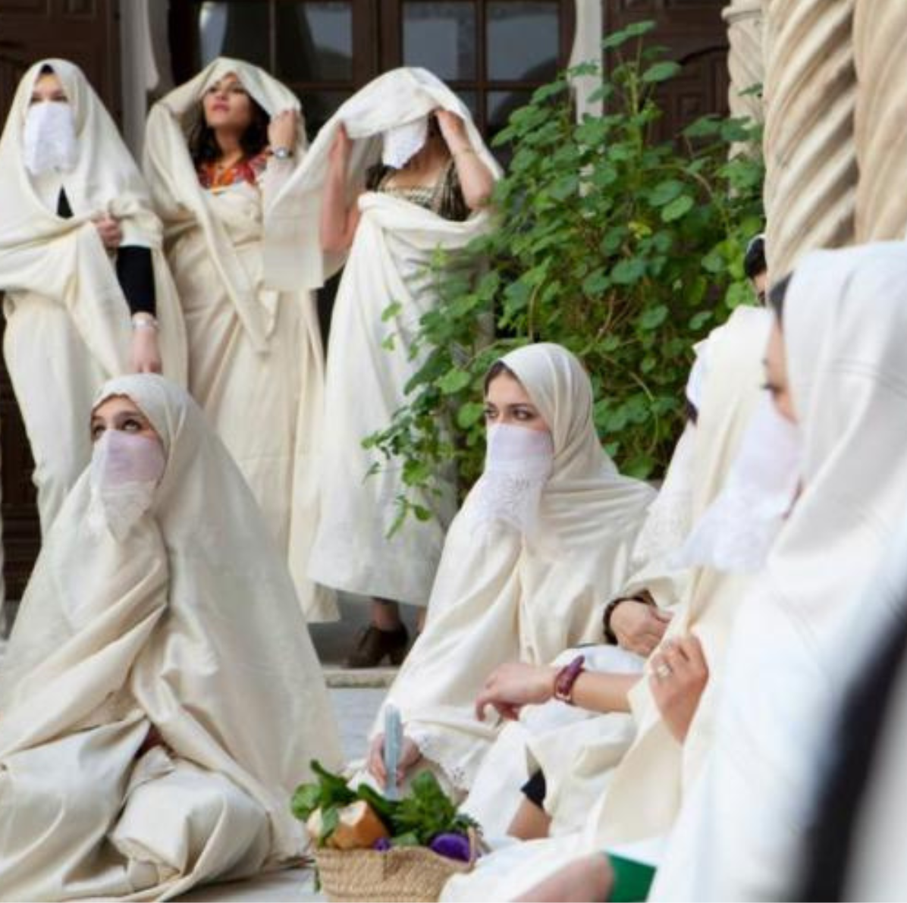

Les Traditions de l'Algérie
Yennayer
Yennayer est le Nouvel An berbère ,célébré le 12 janvier. Les festivités comprennent des célébrations traditionnelles, des chants, des repas et des échanges de cadeaux.La date de Yennayer correspond au calendrier agraire berbère, qui suit le cycle des saisons et des récoltes
EL Haïk
Le haïk ,cette longue étoffe blanche, crème ou écrue faite de pure soie qui enveloppe élégamment la femme algérienne de la tête aux pieds. Ce traditionnel habit algérois est pourtant un des symboles phares de notre glorieuse Révolution de novembre et demeurera éternellement associé à la légendaire Bataille d'Alger
Bijoux Kabyles

Les bijoux kabyles sont des bijoux traditionnels portés par les femmes berbères. Ces bijoux sont souvent fabriqués à partir de métaux tels que l'argent et le cuivre. Les motifs de ces bijoux sont souvent inspirés de la nature et des symboles berbères, tels que les étoiles, les croissants de lune et les animaux.
Robe Kabyle

La robe kabyle est un vêtement traditionnel porté par les femmes de la région de Kabylie en Algérie elle est considérée comme un symbole de l'identité culturelle kabyle et est souvent portée lors de célébrations et de festivals
Robe Chawi

La robe chawi est un vêtement traditionnel porté par les femmes de la région des Aurès en Algérie ,elle est également appréciée pour ses couleurs vives et ses motifs décoratifs qui représentent les traditions et les symboles locaux, tels que les motifs berbères et les symboles de la nature.
Jabador

Le jabador est une tenue traditionnelle pour homme en Algérie, portée dans différentes régions du pays Le jabador est souvent porté lors de cérémonies et de fêtes familiales et les festivals religieux. Il est également porté lors de célébrations nationales telles que la fête de l'indépendance algérienne.
Karako
.png)
Le Karako est un costume traditionnel algérien , plus précisément algérois , il est l'évolution de la ghlila.le karakou est considéré comme une tenue très élégante et formelle en il est souvent porté lors d'occasions speciales
Chedda Tlemcenienne

La robe Chedda est une tenue traditionnelle algérienne portée par les femmes de Tlemcen lors de célébrations. Elle est considérée comme un symbole de l'héritage culturel et de la tradition de la ville. Les motifs de broderie sur la robe sont souvent inspirés de l'art islamique et de la calligraphie arabe.
Rechta

Rechta est un plat traditionnel algérien, originaire de la région de Constantine il est souvent servi pour les grandes occasions et il est considéré comme un plat copieux et réconfortant, parfait pour les journées fraîches et les soirées d'hiver.
Couscous

Le Couscous est un plat traditionnel algérien, largement consommé dans tout le pays et considéré comme l'un des plats nationaux il est souvent servi pour les grandes occasions.